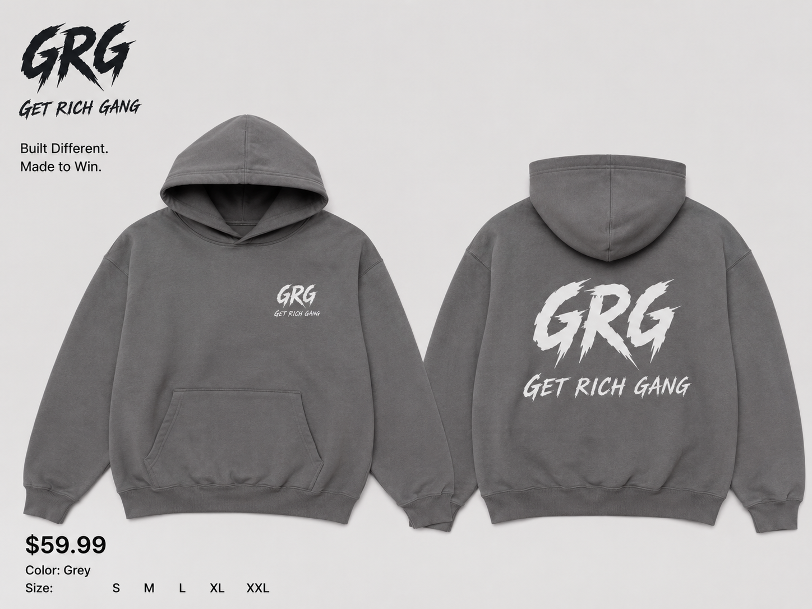
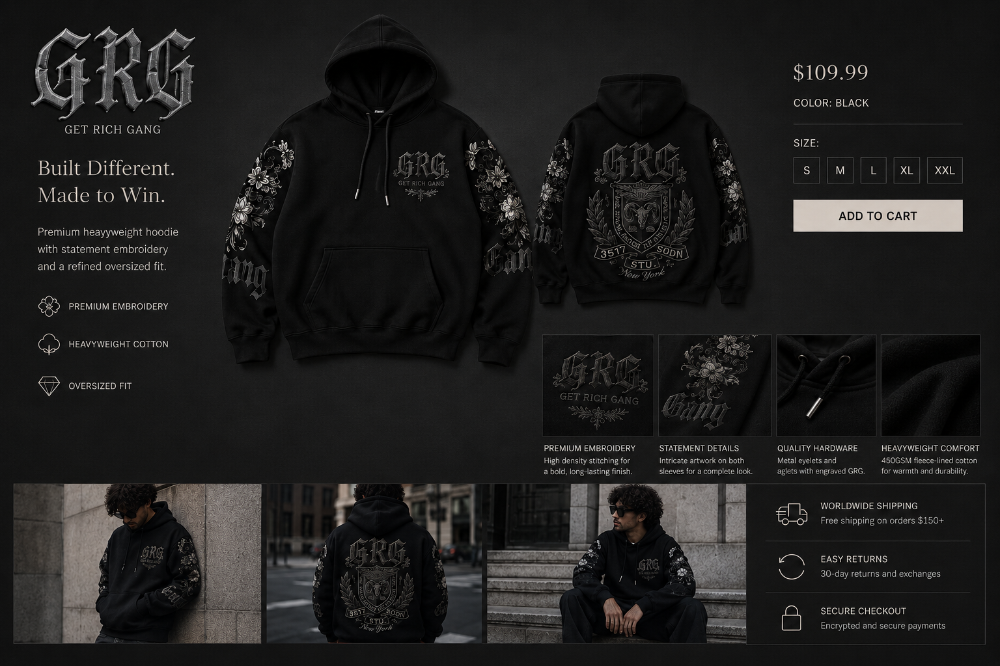
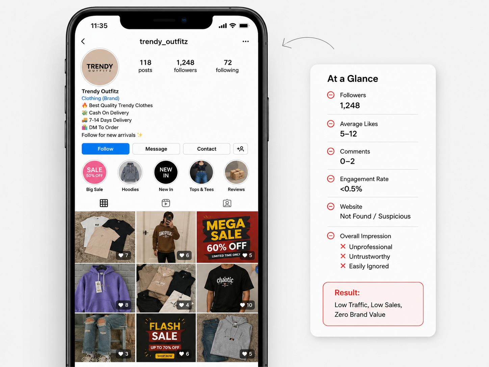
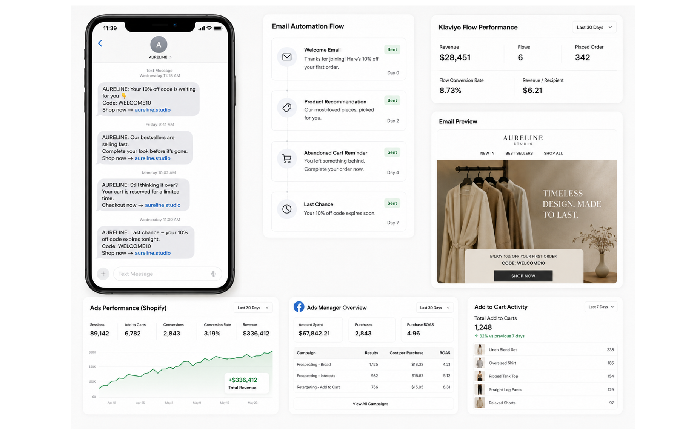

The product feels stronger than the store
Your packaging, photography or social content has improved, but the website still feels like the first version of the business.
Shopify commerce design & growth
Jason Fung Studio helps founder-led fashion, beauty and lifestyle brands turn an early-stage storefront into a clearer, more credible commerce system without prematurely hiring an entire e-commerce team.
30-day engagements / Projects from US$3,000 / Work directly with Jason
The awkward stage
Your packaging, photography or social content has improved, but the website still feels like the first version of the business.
Customers click from an ad, email or social post, but the page does not continue the same promise or make the buying decision feel obvious.
The website, offer, creative, email and advertising are rebuilt separately every time.
Each specialist works on one piece, but customers experience everything as one connected journey.
The issue is rarely one isolated page. It is usually the gap between attention, understanding, trust, purchase and follow-up.
Selected transformations
Every case study should show the original problem, what was diagnosed, what changed and the visible result.
The product and visual direction had improved, but the storefront did not yet communicate the same level of quality, clarity or trust.
"Jason helped us understand what needed to change first, not just what could be redesigned."View the transformation ->


Customers had to work too hard to compare options, understand the offer and feel confident about purchasing.
"The page finally explains the product the way we explain it in person."View the transformation ->


The ad created attention, but the landing destination did not continue the same promise or remove friction.
"The campaign finally felt like one connected customer journey."View the transformation ->
The commerce build system
We review the store, product range, offer, traffic sources, existing assets and upcoming commercial priority.
You leave with clarity on what should change first and what should not.We define the customer journey, product hierarchy, merchandising, page architecture and offer.
You leave with one coherent plan before execution begins.We implement the agreed storefront, landing-page, creative and automation improvements.
You leave with a stronger customer-facing commerce experience.We align the campaign promise, landing destination, product decision and essential follow-up systems.
You leave with one connected path rather than isolated activities.We verify the work, document the system and clarify the next priorities.
You leave with a foundation the founder or future internal team can continue.Diagnose -> Structure -> Build -> Connect -> Operationalize
The flagship engagement
One focused engagement built around the most important commercial constraint inside your Shopify business.
Ways to work together
Shopify Foundation Sprint
For brands that primarily need a clean, credible and launch-ready Shopify foundation.
Shopify Growth Sprint
For brands already selling, launching or advertising that need the store, offer and campaign journey improved together.
Commerce System Build
For broader implementations involving greater catalogue complexity, more pages, campaign infrastructure or launch support.
You do not need to select the package yourself. After reviewing the business, I recommend the smallest engagement capable of addressing the actual problem.

Founder-led by design
I am Jason Fung, a Shopify and digital product designer with experience across e-commerce, UX/UI, campaign creative and product-brand operations.
The goal is not to make your brand dependent on Jason Fung Studio. It is to leave you with a stronger commerce capability that you understand, own and can eventually transfer to your internal team.
Before you book
No. Design may be part of the work, but every engagement begins by identifying the main constraint across the store, offer, merchandising and campaign journey.
I will tell you. The Store Diagnosis is intended to determine whether the website and customer journey are the correct constraints before recommending a project.
No. Revenue depends on product demand, pricing, traffic, inventory, fulfilment and several variables outside the studio's control. We commit to the agreed work, process and quality.
Yes. The client retains ownership of Shopify, the domain, advertising accounts, customer data and final approved assets.
You work directly with Jason throughout diagnosis, strategy and direction. Trusted specialists may support clearly defined components when required.
Start with diagnosis
In a focused 20-minute conversation, we will review where the business is now, what you are trying to accomplish next and whether the Shopify customer journey is the right problem for us to solve.
No full free audit. No pressure to select a package during the call.